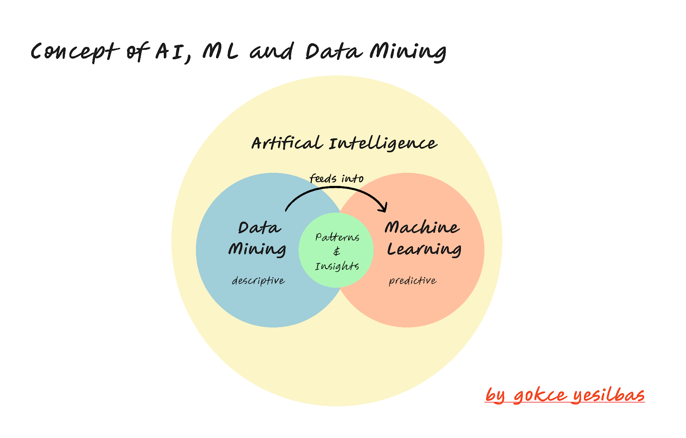
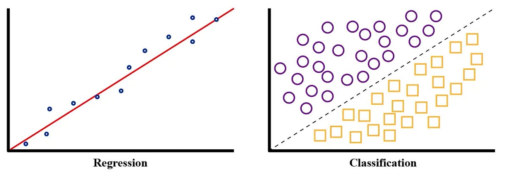

flowchart BT
subgraph Prediction ["Making Predictions"]
D[New Inputs<br/>1900 sq_ft, 3 bedrooms] --> E[Trained Model]
E --> F[Predictions<br/>$250,000]
end
subgraph Training ["Model Training"]
A[Inputs<br/>sq_feet, bedrooms] --> C[Trained Model]
B[Outputs<br/>sale_price] --> C
end
style A fill:#e8f5e8
style B fill:#ffe6cc
style C fill:#fff2cc
style E fill:#fff2cc
style D fill:#e8f5e8
style F fill:#ffe6cc
19 Introduction to Machine Learning and Artificial Intelligence
Throughout this course, you’ve been building a solid foundation in Python and data science fundamentals. You’ve learned to import datasets, clean and manipulate data with pandas, create compelling visualizations, and write functions to automate your work. Much of what you’ve accomplished so far falls under exploratory data analysis — the essential practice of understanding your data through summary statistics, visualizations, and descriptive insights.
But data mining encompasses more than just exploration. It’s also about uncovering hidden patterns in your data that can help you make predictions, discover relationships, and automate decision-making. This is where machine learning enters the picture. While you’ve been using code to describe what happened in your data, machine learning allows you to predict what might happen next or discover patterns you never would have found manually.
This chapter introduces you to the fundamental concepts of artificial intelligence, machine learning, and how they fit into the broader data mining workflow you’ve been developing. In the chapters that follow, you’ll start applying these concepts hands-on, using ML techniques to uncover patterns in real datasets and make data-driven predictions. The Python skills you’ve built will serve as the perfect foundation for this next phase of your data science journey.
19.1 Learning Objectives
By the end of this chapter, you should be able to:
- Define Artificial Intelligence (AI) and Machine Learning (ML) and explain how they relate to data mining
- Distinguish between supervised learning and unsupervised learning approaches
- Identify specialized ML/AI approaches including reinforcement learning and generative AI (GenAI)
- Recognize real-world ML applications in recommendation systems, fraud detection, and personalization
- Match specific business problems to appropriate ML approaches
19.2 What is AI? What is ML? Where Does Data Mining Fit?
When you hear terms like AI and machine learning in the news, they often sound like science fiction. In reality, these concepts are built on straightforward ideas about using data to make better decisions.
- Artificial Intelligence (AI) refers to the broad field of building computer systems that can mimic or approximate human-like intelligence. This might mean reasoning, problem solving, or adapting to new information.
- Machine Learning (ML) is a subset of AI focused on algorithms that learn patterns from data. Instead of being explicitly programmed with step-by-step rules, ML models improve their performance as they are exposed to more examples.
- Data Mining is the process of discovering useful insights and patterns in data. ML and AI techniques are often used as advanced tools within data mining projects.

Think of it this way:
- Data mining is like digging into data to uncover hidden gems.
- ML provides the machinery — the drills and excavators — to dig deeper and automate predictions.
- AI is the broader ambition: building systems that act intelligently using those insights.
NoteA Soft Intro to Machine Learning
Knowledge Check
19.3 Types of Machine Learning
Although the ML field includes many different approaches, most methods fall into two main categories: supervised learning and unsupervised learning.
Supervised Learning
In supervised learning, the model is trained on data where both the inputs (features) and the outputs (labels) are known. The goal is to learn a mapping from inputs → outputs that generalizes to new, unseen data.
Think of supervised learning like learning with a teacher who provides both the questions and the correct answers. The algorithm studies these examples to understand the relationship between the input features and the desired output. Once trained, it can make predictions on new data where only the inputs are provided.
Why is it called “supervised”? Because we supervise the learning process by providing the correct answers (labels) during training. The algorithm learns by comparing its predictions to these known correct answers and adjusting accordingly.
Supervised learning problems fall into two main categories based on what type of output we’re trying to predict:

Regression Problems
Regression predicts continuous numerical values — numbers that can take any value within a range.
How it works: The algorithm finds patterns between features (sq_feet, bedrooms) and the continuous output (sale_price). For example, it might learn that each additional square foot adds about $120 to the price, and each bedroom adds $15,000.
Regression example - predicting house prices:
feature 1: sq_feet feature 2: bedrooms output: sale_price
0 1200 2 150000
1 1500 3 200000
2 1800 3 240000
3 2100 4 280000
4 2400 4 320000Real-world prediction: When a new home comes on the market with 1,900 sq_feet and 3 bedrooms, Zillow can use this learned pattern to predict an expected sale price of approximately $250,000.
Classification Problems
Classification predicts discrete categories or classes — specific labels from a predefined set.
How it works: The algorithm learns patterns that distinguish between categories. It might discover that emails with more than 5 links and more than 3 exclamation marks are usually spam.
Classification example - predicting spam:
feature 1: num_links feature 2: exclamation_marks output: spam_category
0 0 1 Not Spam
1 8 12 Spam
2 2 0 Not Spam
3 15 8 Spam
4 1 2 Not SpamReal-world prediction: When a new email arrives with 10 links and 6 exclamation marks, the model can classify it as “Spam” and automatically move it to the spam folder.
Business Applications
Supervised learning is everywhere in the business world. From the moment you wake up and check your phone (spam filtering), to applying for a loan (credit approval), to watching Netflix recommendations (personalization), supervised learning algorithms are working behind the scenes. Companies across every industry use these techniques because they provide concrete, actionable predictions that directly support business decisions and automate complex processes.
Regression Applications:
- Finance: Banks may use number of credit cards, current limits and balances, along with previous defaults, and job details (years employed, income, etc.) to predict the amount of money an applicant is approved for for a mortgage.
- Retail: E-commerce companies may use customer age, purchase history, browsing behavior, and seasonal trends to predict how much revenue a specific customer will generate over the next 12 months.
- Real Estate: Property platforms like Zillow may use square footage, number of bedrooms/bathrooms, neighborhood characteristics, and recent comparable sales to predict the market value of a home.
- Marketing: Digital marketing teams may use ad spend, audience demographics, campaign type, and historical performance data to predict the return on investment (ROI) for a new advertising campaign.
Classification Applications:
- Healthcare: Medical systems may use patient symptoms, test results, medical history, and demographic information to classify whether a patient is likely to have a specific disease or condition.
- Banking: Financial institutions may use transaction amount, time of day, location, merchant type, and spending patterns to classify whether a credit card transaction is fraudulent or legitimate.
- Technology: Social media platforms may use image pixels, metadata, user reports, and content analysis to classify whether a posted image contains inappropriate content that should be removed.
- Manufacturing: Quality control systems may use sensor readings, temperature data, production line speed, and material specifications to classify whether a manufactured product meets quality standards or should be rejected.
The key insight is that supervised learning models identify mathematical patterns between input features and known outputs, allowing them to make accurate predictions on new, unseen data. This makes them incredibly valuable for business decision-making across virtually every industry.
Unsupervised Learning
In unsupervised learning, the model is given inputs without labeled outputs. The goal is to discover patterns, structures, or groupings within the data.
Think of unsupervised learning like exploring a new city without a map or tour guide. You have to discover the neighborhoods, landmarks, and patterns of organization on your own. The algorithm looks at the data and tries to find hidden structures or natural groupings that weren’t obvious before.
Why is it called “unsupervised”? Because there’s no teacher providing correct answers. The algorithm must find patterns and relationships in the data without any guidance about what the “right” groups or structures should be.
flowchart TB
subgraph Data ["Raw Data (No Labels)"]
A[Feature 1<br/>Annual Spending] --> D
B[Feature 2<br/>Visit Frequency] --> D
C[Feature 3<br/>Average Purchase] --> D
end
subgraph Discovery ["Pattern Discovery"]
D[Trained Model] --> E[Hidden Patterns<br/>Customer Segments]
E --> F["Non Loyal Customers"]
E --> G["Moderatly Loyal Customers"]
E --> H["Highly Loyal Customers"]
end
style A fill:#fff0f5
style B fill:#fff0f5
style C fill:#fff0f5
style D fill:#f0f8ff
style E fill:#f5f5dc
A very common type of unsupervised learning is clustering, which focuses on finding natural groups or segments in the data where similar items are grouped together.
How it works: The algorithm analyzes features (annual spending, visit frequency, purchase amounts) and identifies customers that behave similarly, grouping them into segments like “Budget Shoppers,” “Premium Customers,” and “Occasional Buyers.”
Clustering example - discovering customer segments:
feat1: annual_spending feat2: visits_per_month feat3: avg_purchase
0 2500 2 125
1 15000 8 400
2 3200 3 160
3 18000 10 450
4 2800 2 140
5 16500 9 380Real-world discovery: After analyzing thousands of customers, the algorithm might discover three distinct groups: Budget Shoppers (low spending, infrequent visits), Premium Customers (high spending, frequent visits), and Casual Browsers (moderate spending, moderate visits).
Business Applications
Unsupervised learning is the detective of the business world. When companies have lots of data but don’t know what insights might be hidden within it, unsupervised learning helps them discover unexpected patterns, customer segments, and market opportunities they never knew existed. It’s particularly valuable for exploratory analysis and uncovering new business strategies.
Clustering Applications:
Retail: E-commerce companies may use purchase history, browsing patterns, time spent on site, and product preferences to discover natural customer segments for targeted marketing campaigns.
Marketing: Digital platforms may use user demographics, content engagement, click patterns, and time spent to discover distinct audience segments for personalized advertising strategies.
Healthcare: Medical researchers may use patient symptoms, test results, genetic markers, and treatment responses to discover new disease subtypes or patient groups.
Finance: Investment firms may use trading patterns, risk preferences, portfolio compositions, and market behaviors to discover different investor personality types.
Other Unsupervised Applications:
Market Research: Companies may use survey responses, purchasing data, and demographic information to discover unrecognized market segments and consumer preferences.
Operations: Manufacturing companies may use sensor data, production metrics, and quality measurements to discover hidden operational inefficiencies or process improvements.
Technology: Social media platforms may use user interactions, content preferences, and network connections to discover communities and recommend new connections.
Supply Chain: Logistics companies may use delivery patterns, route data, and timing information to discover optimal distribution strategies and warehouse locations.
The key insight is that unsupervised learning reveals hidden structures and relationships in data that weren’t previously known, enabling businesses to discover new opportunities, understand their customers better, and optimize operations in ways they never considered before.
NoteSupervised vs. Unsupervised Learning
Knowledge Check
19.4 Specialized Topics
While supervised and unsupervised learning are the main pillars, there are other types of learning that are frequently discussed in the ML/AI space. We won’t dive deeply into them in this course, but it’s important to know they exist.
19.5 Summary
This chapter has taken you from the exploratory data analysis techniques you’ve mastered to the exciting world of machine learning and artificial intelligence. You’ve discovered that ML is not science fiction, but rather a practical extension of the data mining skills you’ve been developing—a way to move from describing what happened in your data to predicting what might happen next or discovering hidden patterns automatically.
Understanding the landscape of machine learning approaches gives you a roadmap for tackling different types of business problems. Supervised learning becomes your tool when you have clear examples of inputs and desired outputs—whether you’re predicting house prices (regression) or classifying emails as spam (classification). Unsupervised learning serves as your detective tool for exploring data when you don’t know what patterns might exist, helping you discover customer segments or identify natural groupings in your data.
Beyond these foundational approaches, you’ve seen how specialized techniques like reinforcement learning, generative AI, transfer learning, and ensemble methods expand the ML toolkit for specific challenges. From the recommendation systems that suggest your next Netflix show to the fraud detection algorithms protecting your credit card, these techniques power the intelligent systems you interact with daily.
Key takeaways from this chapter:
- AI, ML, and data mining work together: AI is the broad ambition, ML provides the algorithmic pattern-finding machinery, and data mining encompasses the entire process of extracting insights from data
- Supervised learning uses labeled examples to learn input-output mappings, supporting both regression (predicting numbers) and classification (predicting categories) problems
- Unsupervised learning discovers hidden structures in data without pre-defined answers, with clustering being a common approach for finding natural groups
- Specialized approaches like semi-supervised learning, transfer learning, and ensemble methods address real-world challenges beyond the basic supervised/unsupervised dichotomy
- Business applications are everywhere—from personalized recommendations and fraud detection to customer segmentation and automated content generation
What’s coming next: In the next chapter, we’ll step back from the excitement of ML techniques to focus on the critical considerations you need to address before building any model. Just as you wouldn’t start cooking without checking if you have the right ingredients, successful ML projects require careful planning around data quality, problem definition, and evaluation strategies. Following that foundation, the upcoming modules will dive deep into fundamental algorithms—starting with simple but powerful techniques and building toward more sophisticated approaches. You’ll learn not just the theory behind these algorithms, but how to implement them in Python and apply them to real business problems using the data science skills you’ve developed throughout this course.
19.6 End of Chapter Exercise
You work as a data analyst for different organizations. For each business scenario below, determine the most appropriate approach to address the business need. Remember that not every business problem requires machine learning—sometimes simple data analysis techniques you’ve already learned are the best solution.
For each scenario: 1. Identify the approach: Is this a regression problem, classification problem, clustering problem, or can it be solved with data visualization/aggregation techniques you’ve already learned? 2. Explain your reasoning: Why is this approach most appropriate? What clues in the problem description helped you decide? 3. Describe the expected output: What would the final result look like?